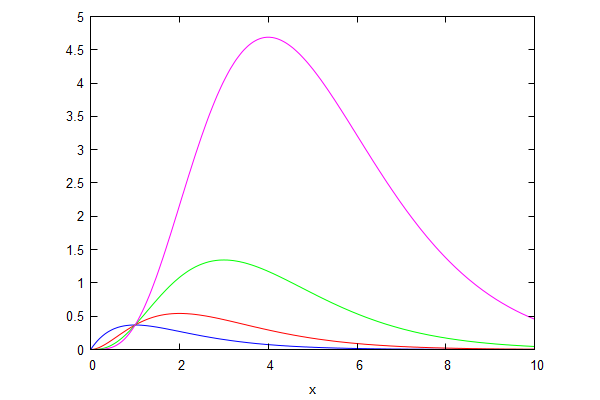
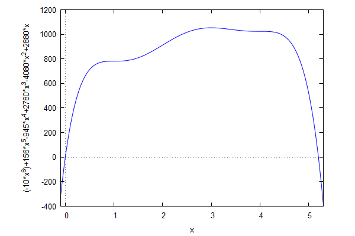
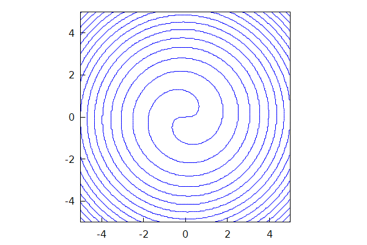
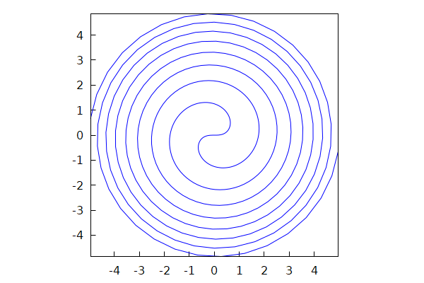

\( \DeclareMathOperator{\abs}{abs} \newcommand{\ensuremath}[1]{\mbox{$#1$}} \)
Lab sheet 6
1 Maxima and minima
| --> | y : x ^ n · exp ( − x ) ; |
\[\operatorname{(y) }{{x}^{n}} {{\% e}^{-x}}\]
| --> | dy : factor ( diff ( y , x ) ) ; |
\[\operatorname{(dy) }-{{x}^{n-1}} \left( x-n\right) {{\% e}^{-x}}\]
| --> | wxplot2d ( makelist ( subst ( n = i , y ) , i , 1 , 4 ) , [ x , 0 , 10 ] , [ legend , false ] ) ; |
\[\operatorname{ }\]

\[\operatorname{ }\]
| --> | sol : solve ( dy = 0 , x ) ; |
\[\operatorname{(sol) }[x=n,x=0]\]
| --> | subst ( sol [ 1 ] , y ) ; |
\[\operatorname{ }{{n}^{n}} {{\% e}^{-n}}\]
| --> | kill ( y , dy , sol ) $ |
| --> | p ( x ) : = − 10 · x ^ 6 + 156 · x ^ 5 − 945 · x ^ 4 + 2780 · x ^ 3 − 4080 · x ^ 2 + 2880 · x ; |
\[\operatorname{ }\operatorname{p}(x):=\left( -10\right) {{x}^{6}}+156 {{x}^{5}}+\left( -945\right) {{x}^{4}}+2780 {{x}^{3}}+\left( -4080\right) {{x}^{2}}+2880 x\]
| --> | wxplot2d ( p ( x ) , [ x , − 0 . 1 , 5 . 3 ] ) ; |
\[\operatorname{ }\]

\[\operatorname{ }\]
| --> | sols : sort ( solve ( diff ( p ( x ) , x ) ) , lambda ( [ e1 , e2 ] , rhs ( e1 ) < rhs ( e2 ) ) ) ; |
\[\operatorname{(sols) }[x=1,x=3,x=4]\]
| --> | map ( lambda ( [ e ] , subst ( e , [ x , p ( x ) , diff ( p ( x ) , x , 2 ) ] ) ) , sols ) ; |
\[\operatorname{ }[[1,781,0],[3,1053,-240],[4,1024,0]]\]
| --> | kill ( p ) $ |
2 Implicit derivatives
| --> | u : x · sin ( x ^ 2 + y ^ 2 ) − y · cos ( x ^ 2 + y ^ 2 ) ; |
\[\operatorname{(u) }x \sin{\left( {{y}^{2}}+{{x}^{2}}\right) }-y \cos{\left( {{y}^{2}}+{{x}^{2}}\right) }\]
| --> | wxdraw ( gr2d ( proportional_axes = xy , implicit ( u = 0 , x , − 5 , 5 , y , − 5 , 5 ) ) ) ; |
\[\operatorname{ }\]

\[\operatorname{ }\]
| --> |
slope1
:
−
diff
(
u
,
x
)
/
diff
(
u
,
y
)
;
|
\[\operatorname{(slope1) }\frac{-2 x y \sin{\left( {{y}^{2}}+{{x}^{2}}\right) }-\sin{\left( {{y}^{2}}+{{x}^{2}}\right) }-2 {{x}^{2}} \cos{\left( {{y}^{2}}+{{x}^{2}}\right) }}{2 {{y}^{2}} \sin{\left( {{y}^{2}}+{{x}^{2}}\right) }+2 x y \cos{\left( {{y}^{2}}+{{x}^{2}}\right) }-\cos{\left( {{y}^{2}}+{{x}^{2}}\right) }}\]
| --> | slope1 : factor ( subst ( cos ( x ^ 2 + y ^ 2 ) = x / y · sin ( x ^ 2 + y ^ 2 ) , slope1 ) ) ; |
\[\operatorname{(slope1) }-\frac{2 x {{y}^{2}}+y+2 {{x}^{3}}}{2 {{y}^{3}}+2 {{x}^{2}} y-x}\]
| --> | xt : t · cos ( t ^ 2 ) ; yt : t · sin ( t ^ 2 ) ; |
\[\operatorname{(xt) }t \cos{\left( {{t}^{2}}\right) }\]
\[\operatorname{(yt) }t \sin{\left( {{t}^{2}}\right) }\]
| --> | trigsimp ( subst ( [ x = xt , y = yt ] , u ) ) ; |
\[\operatorname{ }0\]
| --> | wxdraw2d ( nticks = 500 , proportional_axes = xy , parametric ( xt , yt , t , − 5 , 5 ) ) ; |
\[\operatorname{ }\]

\[\operatorname{ }\]
| --> | slope2 : diff ( yt , t ) / diff ( xt , t ) ; |
\[\operatorname{(slope2) }\frac{\sin{\left( {{t}^{2}}\right) }+2 {{t}^{2}} \cos{\left( {{t}^{2}}\right) }}{\cos{\left( {{t}^{2}}\right) }-2 {{t}^{2}} \sin{\left( {{t}^{2}}\right) }}\]
| --> | slope1t : factor ( trigsimp ( subst ( [ x = xt , y = yt ] , slope1 ) ) ) ; |
\[\operatorname{(slope1t) }-\frac{\sin{\left( {{t}^{2}}\right) }+2 {{t}^{2}} \cos{\left( {{t}^{2}}\right) }}{2 {{t}^{2}} \sin{\left( {{t}^{2}}\right) }-\cos{\left( {{t}^{2}}\right) }}\]
| --> | trigsimp ( factor ( slope2 − slope1t ) ) ; |
\[\operatorname{ }0\]
| --> | kill ( u , xt , yt , slope1 , slope1t , slope2 ) $ |
| --> | u : ( x ^ 2 + y ^ 2 ) ^ 2 + 85 · ( x ^ 2 + y ^ 2 ) − 500 + 18 · x · ( 3 · y ^ 2 − x ^ 2 ) ; |
\[\operatorname{(u) }{{\left( {{y}^{2}}+{{x}^{2}}\right) }^{2}}+18 x\, \left( 3 {{y}^{2}}-{{x}^{2}}\right) +85 \left( {{y}^{2}}+{{x}^{2}}\right) -500\]
| --> | slope1 : factor ( − diff ( u , x ) / diff ( u , y ) ) ; |
\[\operatorname{(slope1) }-\frac{2 x {{y}^{2}}+27 {{y}^{2}}+2 {{x}^{3}}-27 {{x}^{2}}+85 x}{y\, \left( 2 {{y}^{2}}+2 {{x}^{2}}+54 x+85\right) }\]
| --> |
xt
:
6
·
cos
(
t
)
+
8
·
cos
(
t
)
^
2
−
4
;
yt : 2 · sin ( t ) · ( 3 − 4 · cos ( t ) ) ; |
\[\operatorname{(xt) }8 {{\cos{(t)}}^{2}}+6 \cos{(t)}-4\]
\[\operatorname{(yt) }2 \left( 3-4 \cos{(t)}\right) \sin{(t)}\]
| --> |
wxdraw2d
(
nticks = 500 , proportional_axes = xy , xtics = false , ytics = false , axis_top = false , axis_bottom = false , axis_left = false , axis_right = false , parametric ( xt , yt , t , 0 , 2 · %pi ) ) ; |
\[\operatorname{ }\]
\[\operatorname{ }\]
| --> | slope1t : factor ( trigsimp ( subst ( [ x = xt , y = yt ] , slope1 ) ) ) ; |
\[\operatorname{(slope1t) }\frac{8 {{\cos{(t)}}^{2}}-3 \cos{(t)}-4}{\left( 8 \cos{(t)}+3\right) \sin{(t)}}\]
| --> | slope2 : factor ( trigsimp ( diff ( yt , t ) / diff ( xt , t ) ) ) ; |
\[\operatorname{(slope2) }\frac{8 {{\cos{(t)}}^{2}}-3 \cos{(t)}-4}{\left( 8 \cos{(t)}+3\right) \sin{(t)}}\]
| --> | slope1t − slope2 ; |
\[\operatorname{ }0\]
| --> | kill ( u , xt , yt , slope1 , slope1t , slope2 ) $ |
3 Higher derivatives
| --> | r ( n ) : = diff ( x ^ n · log ( x ) / n ! , x , n ) ; |
\[\operatorname{ }\operatorname{r}(n):=\frac{{{d}^{n}}}{d {{x}^{n}}} \frac{{{x}^{n}} \log{(x)}}{n!}\]
| --> | makelist ( r ( n ) , n , 1 , 10 ) ; |
\[\operatorname{ }[\log{(x)}+1,\log{(x)}+\frac{3}{2},\log{(x)}+\frac{11}{6},\log{(x)}+\frac{25}{12},\log{(x)}+\frac{137}{60},\log{(x)}+\frac{49}{20},\log{(x)}+\frac{363}{140},\log{(x)}+\frac{761}{280},\log{(x)}+\frac{7129}{2520},\log{(x)}+\frac{7381}{2520}]\]
| --> | makelist ( [ n , r ( n ) − r ( n − 1 ) ] , n , 2 , 10 ) ; |
\[\operatorname{ }[[2,\frac{1}{2}],[3,\frac{1}{3}],[4,\frac{1}{4}],[5,\frac{1}{5}],[6,\frac{1}{6}],[7,\frac{1}{7}],[8,\frac{1}{8}],[9,\frac{1}{9}],[10,\frac{1}{10}]]\]
| --> | r1 ( n ) : = log ( x ) + sum ( 1 / k , k , 1 , n ) ; |
\[\operatorname{ }\operatorname{r1}(n):=\log{(x)}+\sum_{k=1}^{n}{\left. \frac{1}{k}\right.}\]
| --> | makelist ( r ( n ) − r1 ( n ) , n , 1 , 20 ) ; |
\[\operatorname{ }[0,0,0,0,0,0,0,0,0,0,0,0,0,0,0,0,0,0,0,0]\]
| --> | kill ( r , r1 ) $ |
| --> | y : t ^ 2 · exp ( t ) ; |
\[\operatorname{(y) }{{t}^{2}} {{\% e}^{t}}\]
| --> | z : factor ( diff ( y , t , 3 ) + a · diff ( y , t , 2 ) + b · diff ( y , t , 1 ) + c · y ) ; |
\[\operatorname{(z) }\left( c {{t}^{2}}+b {{t}^{2}}+a {{t}^{2}}+{{t}^{2}}+2 b t+4 a t+6 t+2 a+6\right) {{\% e}^{t}}\]
| --> | sol : solve ( makelist ( coeff ( expand ( z / exp ( t ) ) , t , i ) , i , 0 , 2 ) ) [ 1 ] ; |
\[\operatorname{(sol) }[c=-1,b=3,a=-3]\]
| --> | kill ( y , z , sol ) $ |
| --> | p ( n ) : = expand ( exp ( x ^ 2 ) · diff ( exp ( − x ^ 2 ) , x , n ) ) ; |
\[\operatorname{ }\operatorname{p}(n):=\operatorname{expand}\left( \operatorname{exp}\left( {{x}^{2}}\right) \left( \frac{{{d}^{n}}}{d {{x}^{n}}} \operatorname{exp}\left( -{{x}^{2}}\right) \right) \right) \]
| --> | for i from 0 thru 10 do print ( p ( i ) ) ; |
\[\]\[1" " \]\[-2 x" " \]\[4 {{x}^{2}}-2" " \]\[12 x-8 {{x}^{3}}" " \]\[16 {{x}^{4}}-48 {{x}^{2}}+12" " \]\[-32 {{x}^{5}}+160 {{x}^{3}}-120 x" " \]\[64 {{x}^{6}}-480 {{x}^{4}}+720 {{x}^{2}}-120" " \]\[-128 {{x}^{7}}+1344 {{x}^{5}}-3360 {{x}^{3}}+1680 x" " \]\[256 {{x}^{8}}-3584 {{x}^{6}}+13440 {{x}^{4}}-13440 {{x}^{2}}+1680" " \]\[-512 {{x}^{9}}+9216 {{x}^{7}}-48384 {{x}^{5}}+80640 {{x}^{3}}-30240 x" " \]\[1024 {{x}^{10}}-23040 {{x}^{8}}+161280 {{x}^{6}}-403200 {{x}^{4}}+302400 {{x}^{2}}-30240" "\]
\[\operatorname{ }\ensuremath{\mathrm{done}}\]
| --> | load ( "orthopoly" ) $ |
| --> | makelist ( factor ( ( − 1 ) ^ n · p ( n ) / hermite ( n , x ) ) , n , 1 , 10 ) ; |
\[\operatorname{ }[1,1,1,1,1,1,1,1,1,1]\]
Created with wxMaxima.
The source of this Maxima session can be downloaded here.